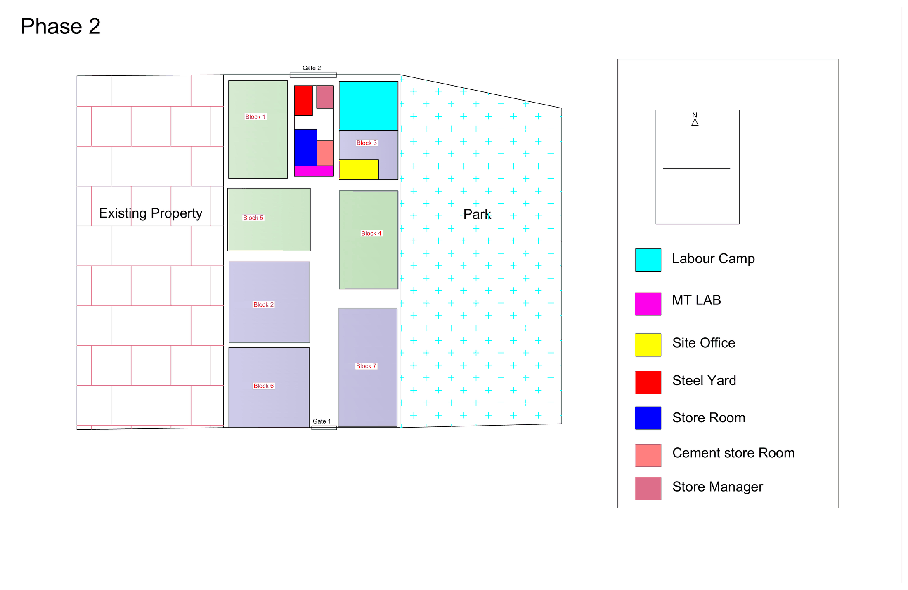
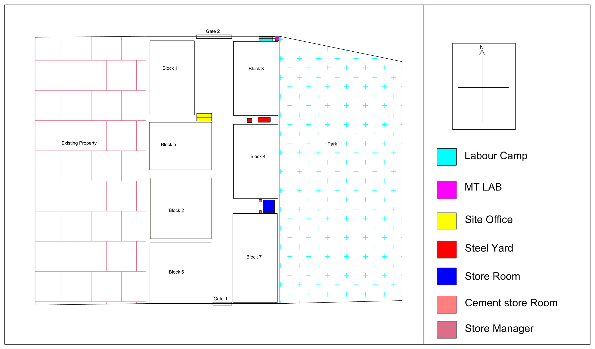
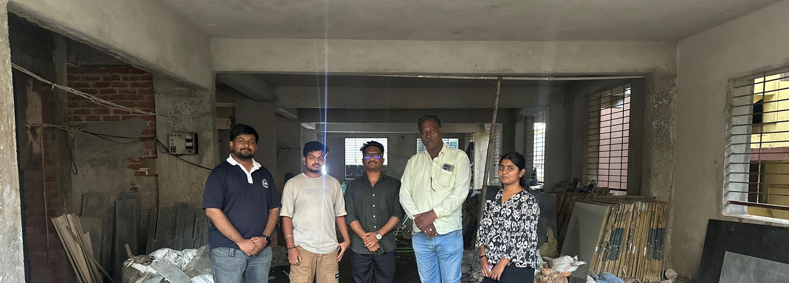

30 August 2024
Topics recorded
RERAHDMCRequired documentsLabour housingMaterial storage
Problem statement 1 of 6
Documents, welfare, temporary facilities, concrete supply and phased site layouts for a seven-block shopping mall on 8 acres.
Source-basedBased on supplied workshop records
The company has secured a contract to build a shopping mall of seven interconnected blocks on an 8-acre site, with three levels of underground parking and roughly 12,000 m³ of concrete Source.
The assignment: study the documents needed by the local governing body and RERA, coordinate with the architect, structural engineer and MEP engineer, and develop a practical construction site layout that covers:
| Block | Area (sq ft) |
|---|---|
| 1 | 16,000 |
| 2 | 18,000 |
| 3 | 16,000 |
| 4 | 16,000 |
| 5 | 14,000 |
| 6 | 18,000 |
| 7 | 20,000 |
| Total | 118,000 |
The report records dates, durations and topics only. No attendees, venue, decisions or approvals are added.
The report discusses RERA and the Hubli-Dharwad Municipal Corporation (HDMC), the civic authority it describes for Hubballi-Dharwad, and lists typical project documentation Source:
The report refers to the Building and Other Construction Workers (BOCW) Act, 1996 as part of its academic discussion. The items above are the report's list, not verbatim statutory clauses, and no compliance is claimed.
Colours as used in the supplied drawings. A sales office and carpentry area are required by the brief but have no separate legend entry on the drawings.
The report splits the 12,000 m³ into three grade groups and prices each at a selected point rate Source:
| Grade | Quantity (m³) | Rate (₹/m³) | Amount (₹) | ₹ crore |
|---|---|---|---|---|
| M20 | 2,400 | 5,800 | 1,39,20,000 | 1.392 |
| M30 | 5,000 | 6,800 | 3,40,00,000 | 3.400 |
| M40 | 4,600 | 7,800 | 3,58,80,000 | 3.588 |
| Total | 12,000 | — | 8,38,00,000 | 8.380 |
The report weighs RMC and on-site batching as alternatives, but it has no complete like-for-like capital and operating cost comparison, so neither is shown as proven cheaper. A final choice needs verified supplier quotations, pour schedules, plant costs and logistics.
Three supplied PDF drawings, preserved as original exhibits with their labels, legend and north arrow. As the block work fronts change, the temporary facilities move from a large storage area (Phase 1) to compact clusters at the site edges Source. Select a drawing to enlarge it.



Original PDFs: Phase 1 (PDF) · Phase 2 (PDF) · Additional layout (PDF)

PS1 is a preliminary planning exercise. It claims no actual mobilisation, construction, statutory approval or cost saving.
Source basis. Supplied PS1 report and three phase-layout PDFs, as consolidated in the master brief. Content is reproduced as stated there; facts not in the source are not added.